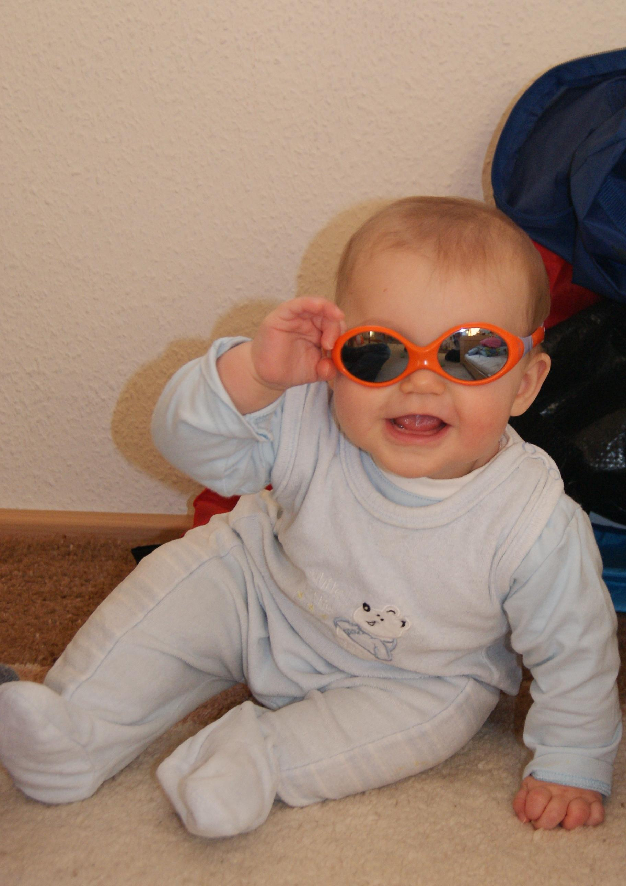

Nach der Geburt regeneriert sich der Körper von den Veränderungen durch die Schwangerschaft und die Geburt.
Schon im Wochenbett können sie Sich und Ihrem Körper etwas Gutes tun und die Regeneration durch sanfte Übungen unterstützen. Gerne zeige ich Ihnen wie das geht. Ca. 12 Wochen nach der Geburt können Sie mit einem Rückbildungskurs beginnen.Hier kräftigen wir gezielt vernachlässigte, stark beanspruchte, fast vergessene und kaum gekannte Muskelgruppen, damit Sie mit mehr Kraft und Energie den neuen Herausforderungen gewachsen sind.
Auch Ihr Baby ist hier herzlich eingeladen mitzuturnen, im Tragetuch, einer geeigneten Tragehilfe oder einfach auf Ihrem Arm. So haben Sie beide Spaß und Sie eine süße Steigerung der Trainingsintensität.
Bei schönem Wetter können wir unser Training auch während eines Spaziergangs machen. Nähere Informationen erhalten Sie dann im Kurs.
